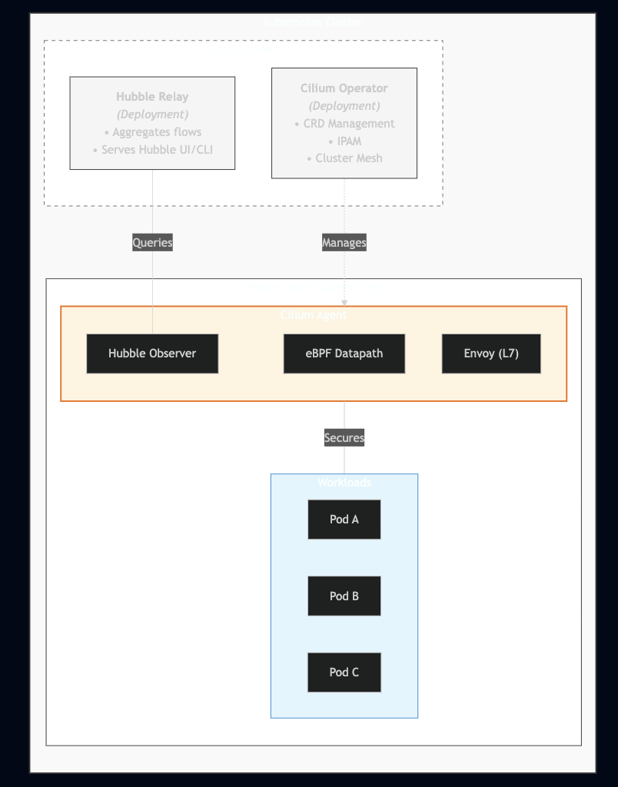
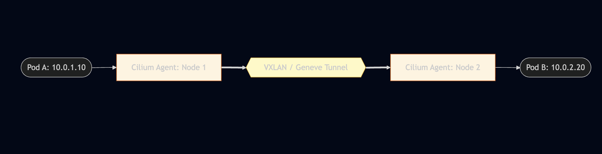
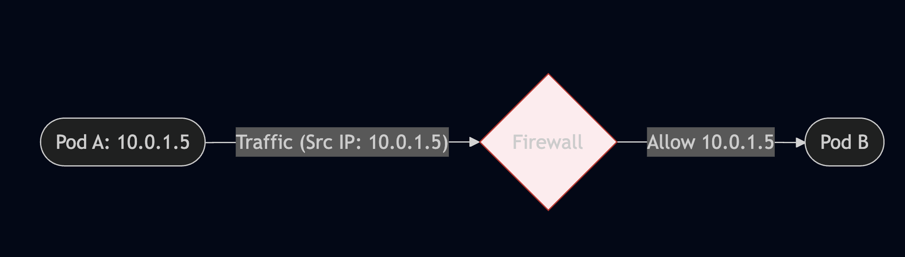
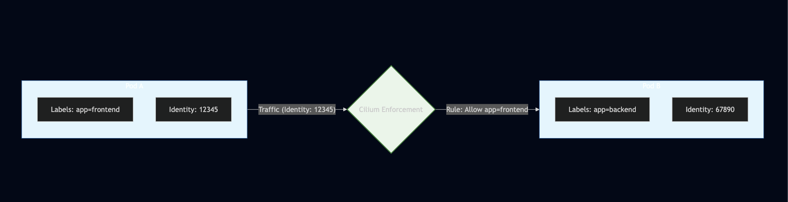
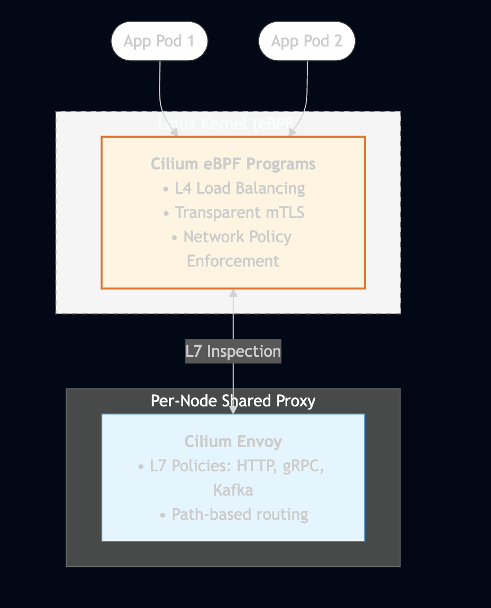
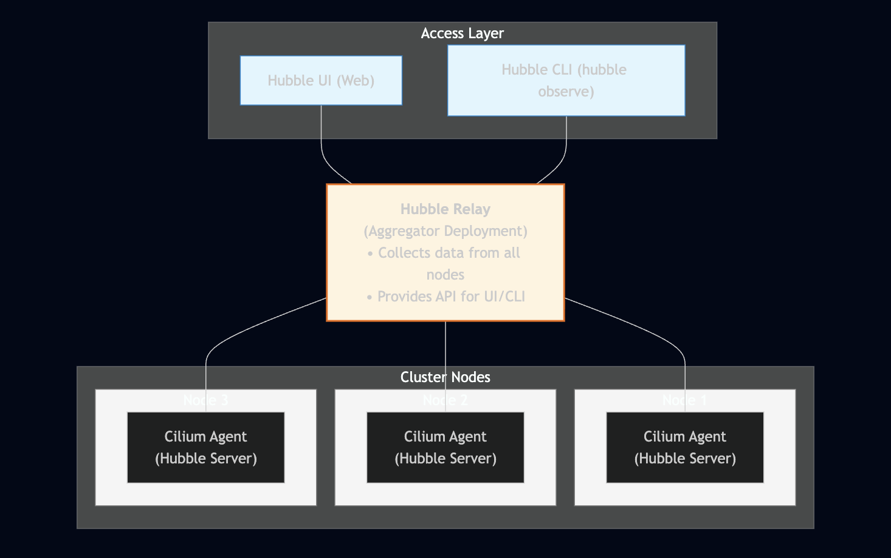

Cilium Certified Associate (CCA) Overview
1. eBPF Fundamentals
Understanding the "Why" before the "How."
- What is eBPF: Extended Berkeley Packet Filter — a revolutionary technology that allows running sandboxed programs in the Linux kernel without changing kernel source code.
- Why eBPF Matters: Enables high-performance networking, security, and observability without the overhead of traditional approaches (iptables, kernel modules).
- eBPF vs iptables: eBPF operates at lower levels with better performance, while iptables uses sequential rule matching that doesn't scale well.
2. Cilium Architecture (20%)
The backbone of cloud-native networking.
- What is Cilium: An open-source, eBPF-based networking, security, and observability solution for Kubernetes and other container orchestration platforms.
- Core Components: Cilium Agent, Cilium Operator, Cilium CNI Plugin, and Hubble.
- CNCF Project: Cilium is a CNCF graduated project, widely adopted in production environments.
Example of Cilium Data Flow:

3. Network Policy (18%)
Securing workloads with identity-based policies.
- CiliumNetworkPolicy: Extended network policies with L3/L4/L7 filtering capabilities.
- Identity-based Security: Cilium assigns identities to endpoints based on labels, not IP addresses.
- Policy Enforcement Modes: Default, Always, and Never modes for controlling policy behavior.
- K8s NetworkPolicy vs CiliumNetworkPolicy: Understanding compatibility and extended features.
4. Service Mesh (16%)
Modern traffic management without sidecars.
- Sidecarless Architecture: Cilium provides service mesh capabilities using eBPF without sidecar proxies.
- Gateway API: The next-generation Kubernetes Ingress API with more expressive routing.
- Ingress Controller: Cilium can act as an Ingress controller for external traffic.
- mTLS Encryption: Transparent encryption of traffic between services.
5. Network Observability (10%)
Visibility into network flows with Hubble.
- Hubble: Cilium's observability layer built on top of eBPF.
- Flow Visibility: L3/L4/L7 network flow logs and metrics.
- Hubble CLI & UI: Command-line and graphical interfaces for observing traffic.
- Integration: Export to Prometheus, Grafana, and other monitoring systems.
6. Installation & Configuration (10%)
Getting Cilium up and running.
- Cilium CLI: The primary tool for installing and managing Cilium.
- Installation Methods: Cilium CLI, Helm, or manual manifests.
- Connectivity Tests: Built-in tests to validate Cilium installation.
- Configuration Options: Datapath modes, IPAM, encryption, and more.
7. Cluster Mesh (10%)
Multi-cluster connectivity.
- What is Cluster Mesh: Connects multiple Kubernetes clusters into a unified network.
- Service Discovery: Services can be discovered and accessed across clusters.
- Global Load Balancing: Distribute traffic across clusters for high availability.
- Requirements: Unique Pod CIDRs, cluster IDs, and shared CA.
8. BGP & External Networking (6%)
Connecting to the outside world.
- BGP Integration: Cilium can peer with external routers using BGP.
- LB IPAM: Automatic IP address management for LoadBalancer services.
- Egress Gateway: Control and monitor egress traffic from the cluster.
- External Workloads: Connect non-Kubernetes workloads to the Cilium network.
Sections That Need to Be Understood
1. eBPF vs iptables — Why eBPF Matters
Domain: eBPF (10%)
Understanding why Cilium chose eBPF over traditional approaches is fundamental.
iptables Limitations:

eBPF Advantages:

Comparison Table:
| Feature | iptables | eBPF (Cilium) |
|---|---|---|
| Rule matching | O(n) linear | O(1) hash lookup |
| Scalability | Degrades with rules | Millions of endpoints |
| L7 filtering | Limited (with helpers) | Native support |
| Observability | Counters only | Full flow visibility |
| Dynamic updates | Full chain reload | Atomic map updates |
| Identity-based | No (IP-based) | Yes (label-based) |
eBPF Hook Points:
| Hook | Location | Use Case |
|---|---|---|
| XDP | Network driver (earliest) | DDoS mitigation, load balancing |
| TC | Traffic Control (ingress/egress) | Network policy, NAT |
References:
2. Cilium Architecture & Components
Domain: Architecture (20%)
Understanding each component's role is essential.
Architecture Overview:

Component Details:
| Component | Type | Role |
|---|---|---|
| Cilium Agent | DaemonSet | Runs on every node, manages eBPF programs, enforces policies |
| Cilium Operator | Deployment | Cluster-wide operations, IPAM, CRD management |
| Cilium CNI | Binary | CNI plugin invoked by kubelet for pod networking |
| Hubble Server | Part of Agent | Collects and exports network flow data |
| Hubble Relay | Deployment | Aggregates Hubble data from all nodes |
| Hubble UI | Deployment | Web interface for flow visualization |
| Cilium Envoy | Part of Agent | L7 proxy for HTTP/gRPC/Kafka policies |
Cilium Agent Responsibilities:
# What Cilium Agent does on each node (understand this for exam)
- Compiles and loads eBPF programs into kernel
- Manages endpoint (pod) identities
- Enforces network policies
- Handles service load balancing (kube-proxy replacement)
- Provides Hubble flow data
- Manages encryption (IPsec/WireGuard)
Cilium Operator Responsibilities:
# What Cilium Operator does cluster-wide (understand this for exam)
- Manages CiliumNode resources
- Handles IPAM (IP allocation)
- Garbage collects stale resources
- Manages Cluster Mesh
- Synchronizes Kubernetes services
References:
3. Datapath Models
Domain: Architecture (20%)
Cilium supports multiple datapath modes for different environments.
Encapsulation Mode (VXLAN/Geneve):

- Pros: Works anywhere (any network)
- Cons: MTU overhead (~50 bytes), slight latency
Native Routing (Direct Routing):

- Pros: Better performance, no MTU overhead
- Cons: Requires network support (BGP, cloud VPC)
Datapath Mode Comparison:
| Mode | Tunnel Type | Use Case | Requirements |
|---|---|---|---|
tunnel=vxlan |
VXLAN | Default and works anywhere | None |
tunnel=geneve |
Geneve | Better metadata support | None |
tunnel=disabled |
None (native) | Cloud/BGP environments | Network routing |
tunnel=disabled + autoDirectNodeRoutes=true |
None | Same L2 network | Nodes on same subnet |
Configuration:
# Helm values for encapsulation
tunnel: vxlan # or geneve
# Helm values for native routing
tunnel: disabled
autoDirectNodeRoutes: true # For same L2 network
# OR use BGP for cross-subnet routing
kube-proxy Replacement:
Cilium can fully replace kube-proxy for better performance:
# Helm values
kubeProxyReplacement: true
# Benefits:
# - eBPF-based service load balancing
# - DSR (Direct Server Return) support
# - Maglev consistent hashing
# - Socket-level load balancing (bypass netfilter)
References:
4. IPAM Modes
Domain: Architecture (20%)
Cilium supports multiple IP Address Management modes.
| IPAM Mode | Description | Use Case |
|---|---|---|
cluster-pool |
Cilium manages pod CIDRs | Default, any environment |
kubernetes |
Use K8s node.spec.podCIDR | Managed K8s (GKE, EKS, AKS) |
crd |
CiliumNode CRD defines CIDRs | Custom IPAM integration |
eni |
AWS ENI integration | AWS EKS |
azure |
Azure IPAM integration | Azure AKS |
alibabacloud |
Alibaba Cloud integration | Alibaba Cloud |
multi-pool |
Multiple IP pools | Advanced multi-tenant |
Cluster Pool Mode (Default):
# Helm values
ipam:
mode: cluster-pool
operator:
clusterPoolIPv4PodCIDRList:
- 10.0.0.0/8
clusterPoolIPv4MaskSize: 24 # /24 per node
AWS ENI Mode:
# Helm values for AWS EKS
ipam:
mode: eni
eni:
enabled: true
awsReleaseExcessIPs: true
subnetTagsFilter:
"kubernetes.io/role/cni": "1"
Kubernetes Mode:
# Helm values (uses node.spec.podCIDR)
ipam:
mode: kubernetes
References:
5. CiliumNetworkPolicy vs Kubernetes NetworkPolicy
Domain: Network Policy (18%)
Cilium supports both standard Kubernetes NetworkPolicy and its extended CiliumNetworkPolicy.
Kubernetes NetworkPolicy (Standard):
apiVersion: networking.k8s.io/v1
kind: NetworkPolicy
metadata:
name: allow-frontend
namespace: production
spec:
podSelector:
matchLabels:
app: backend
policyTypes:
- Ingress
ingress:
- from:
- podSelector:
matchLabels:
app: frontend
ports:
- protocol: TCP
port: 8080
CiliumNetworkPolicy (Extended):
apiVersion: cilium.io/v2
kind: CiliumNetworkPolicy
metadata:
name: allow-frontend-l7
namespace: production
spec:
endpointSelector:
matchLabels:
app: backend
ingress:
- fromEndpoints:
- matchLabels:
app: frontend
toPorts:
- ports:
- port: "8080"
protocol: TCP
rules:
http: # L7 rules!
- method: GET
path: "/api/v1/.*"
- method: POST
path: "/api/v1/users"
Feature Comparison:
Credit: Isovalent

CiliumNetworkPolicy Unique Features:
L7 HTTP Rules:
spec:
ingress:
- toPorts:
- ports:
- port: "80"
rules:
http:
- method: GET
path: "/public/.*"
headers:
- "X-Api-Key: secret"
DNS-based Egress (FQDN):
spec:
egress:
- toFQDNs:
- matchName: "api.github.com"
- matchPattern: "*.amazonaws.com"
toPorts:
- ports:
- port: "443"
toServices (Service-based):
spec:
egress:
- toServices:
- k8sService:
serviceName: redis
namespace: database
References:
6. Identity-based Security Model
Domain: Network Policy (18%)
Cilium's security model is fundamentally different from IP-based approaches.
Traditional IP-based Security:

Problems:
- Pod IPs are ephemeral (change on restart)
- Rules must be updated constantly
- Doesn't scale with dynamic workloads
Cilium Identity-based Security:

Benefits:
- Identity based on labels, not IPs
- Survives pod restarts/reschedules
- Scales automatically
How Cilium Identity Works:
With this picture should be enough explained xD

View Identities:
# List all identities
cilium identity list
# Example output:
# ID LABELS
# 1 reserved:host
# 2 reserved:world
# 3 reserved:unmanaged
# 4 reserved:health
# 12345 k8s:app=frontend
# 67890 k8s:app=backend
References:
7. Policy Enforcement Modes
Domain: Network Policy (18%)
Cilium supports different enforcement modes for policies.
Enforcement Modes:
| Mode | Description | Behavior |
|---|---|---|
default |
Endpoint-specific | Allow all until policy is applied |
always |
Always enforce | Deny all unless explicitly allowed |
never |
Never enforce | Policies are ignored (monitoring only) |
Default Mode (Recommended):
# Helm values
policyEnforcementMode: default
# Behavior:
# - Endpoints WITHOUT policies: Allow all traffic
# - Endpoints WITH policies: Only allowed traffic passes
Always Mode (Zero Trust):
# Helm values
policyEnforcementMode: always
# Behavior:
# - ALL endpoints: Deny by default
# - Must explicitly allow all traffic
# - Most secure, but requires complete policy coverage
Never Mode (Monitoring):
# Helm values
policyEnforcementMode: never
# Behavior:
# - Policies are loaded but not enforced
# - Useful for auditing/testing policies
# - Hubble still shows policy verdicts
Per-Endpoint Annotation Override:
apiVersion: v1
kind: Pod
metadata:
name: my-pod
annotations:
# Force policy enforcement for this pod
policy.cilium.io/policy-enforcement: "always"
Check Current Mode:
# Check policy enforcement mode
# No idea why it only appear in: https://docs.cilium.io/en/latest/cmdref/cilium_config/#see-also
# Not other version like 1.15 -> 1.18
cilium config view | grep PolicyEnforcement
# Check endpoint policy status
cilium endpoint list
References:
8. Gateway API vs Ingress
Domain: Service Mesh (16%)
Cilium supports both traditional Ingress and the newer Gateway API. Yeah, I don't think Cilium will ask for Gateway API, but it did. So you have to understand Gateway API also!
Ingress (Legacy):
apiVersion: networking.k8s.io/v1
kind: Ingress
metadata:
name: my-ingress
annotations:
kubernetes.io/ingress.class: cilium
spec:
rules:
- host: app.example.com
http:
paths:
- path: /
pathType: Prefix
backend:
service:
name: my-service
port:
number: 80
Gateway API (Modern):
# Gateway - defines the listener
apiVersion: gateway.networking.k8s.io/v1
kind: Gateway
metadata:
name: my-gateway
spec:
gatewayClassName: cilium
listeners:
- name: http
protocol: HTTP
port: 80
allowedRoutes:
namespaces:
from: Same
---
# HTTPRoute - defines routing rules
apiVersion: gateway.networking.k8s.io/v1
kind: HTTPRoute
metadata:
name: my-route
spec:
parentRefs:
- name: my-gateway
hostnames:
- "app.example.com"
rules:
- matches:
- path:
type: PathPrefix
value: /api
backendRefs:
- name: api-service
port: 8080
- matches:
- path:
type: PathPrefix
value: /
backendRefs:
- name: web-service
port: 80
Gateway API Advantages:
| Feature | Ingress | Gateway API |
|---|---|---|
| Role separation | Single resource | Gateway (infra) + Route (dev) |
| Cross-namespace | Limited | Native support |
| Traffic splitting | Annotations | Native weighted routing |
| Header matching | Annotation-dependent | Native support |
| Protocol support | HTTP/HTTPS | HTTP, gRPC, TCP, TLS |
| Extensibility | Annotations | Typed extension points |
Traffic Splitting with Gateway API:
apiVersion: gateway.networking.k8s.io/v1
kind: HTTPRoute
metadata:
name: canary-route
spec:
parentRefs:
- name: my-gateway
rules:
- backendRefs:
- name: app-v1
port: 80
weight: 90 # 90% to v1
- name: app-v2
port: 80
weight: 10 # 10% to v2
Header-based Routing:
apiVersion: gateway.networking.k8s.io/v1
kind: HTTPRoute
metadata:
name: header-route
spec:
parentRefs:
- name: my-gateway
rules:
- matches:
- headers:
- name: x-canary
value: "true"
backendRefs:
- name: app-canary
port: 80
- backendRefs:
- name: app-stable
port: 80
References:
9. Cilium Service Mesh
Domain: Service Mesh (16%)
Cilium provides service mesh capabilities without sidecar proxies.
Sidecar vs Sidecarless Architecture:
Traditional Sidecar Service Mesh Cons: Resource overhead, latency, operational complexity

Cilium Sidecarless Service Mesh Pros: Lower resource usage, better performance

Enabling Cilium Service Mesh:
# Helm values
ingressController:
enabled: true
loadbalancerMode: shared # or dedicated
gatewayAPI:
enabled: true
envoy:
enabled: true
mTLS with Cilium:
# Helm values for transparent encryption
encryption:
enabled: true
type: wireguard # or ipsec
# WireGuard is recommended for performance
# Automatically encrypts pod-to-pod traffic
Check Encryption Status:
# Verify encryption is enabled
cilium status --verbose | grep Encryption
# Check encrypted connections
cilium encrypt status
References:
10. Hubble Observability
Domain: Network Observability (10%)
Hubble provides deep network visibility powered by eBPF.
Hubble Architecture:

Enable Hubble:
# Helm values
hubble:
enabled: true
relay:
enabled: true
ui:
enabled: true
metrics:
enabled:
- dns
- drop
- tcp
- flow
- icmp
- http
Hubble CLI Commands:
# Observe all flows
hubble observe
# Filter by namespace
hubble observe --namespace production
# Filter by pod
hubble observe --pod production/frontend
# Filter by verdict (FORWARDED, DROPPED, AUDIT)
hubble observe --verdict DROPPED
# Filter by protocol
hubble observe --protocol TCP
# Filter by L7 type
hubble observe --type l7
# Filter by HTTP status
hubble observe --http-status 500
# Follow real-time flows
hubble observe -f
# Output as JSON
hubble observe -o json
# Show DNS queries
hubble observe --protocol DNS
Hubble Flow Fields:
{
"time": "2025-12-21T10:30:00.000Z",
"verdict": "FORWARDED",
"ethernet": { "source": "...", "destination": "..." },
"IP": { "source": "10.0.1.5", "destination": "10.0.2.10" },
"l4": { "TCP": { "source_port": 45678, "destination_port": 8080 } },
"source": {
"identity": 12345,
"namespace": "production",
"labels": ["k8s:app=frontend"],
"pod_name": "frontend-abc123"
},
"destination": {
"identity": 67890,
"namespace": "production",
"labels": ["k8s:app=backend"],
"pod_name": "backend-xyz789"
},
"Type": "L3_L4",
"l7": {
"type": "HTTP",
"http": { "method": "GET", "url": "/api/users", "code": 200 }
},
"traffic_direction": "INGRESS"
}
L7 Visibility:
# Enable L7 visibility with annotation
apiVersion: v1
kind: Pod
metadata:
name: my-pod
annotations:
policy.cilium.io/proxy-visibility: "<Ingress/80/TCP/HTTP>"
Or via CiliumNetworkPolicy:
apiVersion: cilium.io/v2
kind: CiliumNetworkPolicy
metadata:
name: l7-visibility
spec:
endpointSelector:
matchLabels:
app: backend
ingress:
- toPorts:
- ports:
- port: "80"
rules:
http: {} # Empty rules enable visibility without filtering
References:
11. Cluster Mesh
Domain: Cluster Mesh (10%)
Connect multiple Kubernetes clusters into a unified network.
Cluster Mesh Architecture:

Requirements:
| Requirement | Description |
|---|---|
| Unique Pod CIDRs | Each cluster must have non-overlapping pod CIDRs |
| Unique Cluster IDs | Each cluster needs a unique numeric ID (1-255) |
| Network Connectivity | Clusters must be able to reach each other |
| Shared CA | All clusters must use the same CA for mTLS |
Enable Cluster Mesh:
# Enable cluster mesh on each cluster
cilium clustermesh enable --service-type LoadBalancer
# Connect clusters
cilium clustermesh connect --destination-context cluster2
# Check status
cilium clustermesh status
Helm Configuration:
# Cluster 1
cluster:
name: cluster1
id: 1
clustermesh:
useAPIServer: true
apiserver:
service:
type: LoadBalancer
# Cluster 2
cluster:
name: cluster2
id: 2
clustermesh:
useAPIServer: true
apiserver:
service:
type: LoadBalancer
Global Services:
# Service accessible from all clusters
apiVersion: v1
kind: Service
metadata:
name: global-api
annotations:
service.cilium.io/global: "true" # Enable global service
service.cilium.io/shared: "true" # Share this service
spec:
selector:
app: api
ports:
- port: 80
Service Affinity:
apiVersion: v1
kind: Service
metadata:
name: global-api
annotations:
service.cilium.io/global: "true"
service.cilium.io/affinity: "local" # Prefer local cluster
# Options: local, remote, none
References:
12. Cilium CLI Commands Cheat Sheet
Domain: Installation and Configuration (10%)
Essential cilium CLI commands for the exam.
Installation & Status:
# Install Cilium
cilium install
# Install with specific version
cilium install --version 1.15.0
# Install with custom Helm values
cilium install --helm-values values.yaml
# Check Cilium status
cilium status
# Detailed status
cilium status --verbose
# Wait for Cilium to be ready
cilium status --wait
Connectivity Tests:
# Run connectivity tests
cilium connectivity test
# Run specific test
cilium connectivity test --test pod-to-pod
# Run tests with Hubble enabled
cilium connectivity test --hubble=true
# Cleanup test resources
cilium connectivity test --cleanup
Configuration:
# View current config
cilium config view
# Get specific config value
cilium config get tunnel
# Set config value (requires agent restart)
cilium config set debug true
Endpoints & Identity:
# List endpoints
cilium endpoint list
# Get endpoint details
cilium endpoint get <endpoint-id>
# List identities
cilium identity list
# Get identity details
cilium identity get <identity-id>
Network Policy:
# List policies
cilium policy get
# Import policy
cilium policy import policy.yaml
# Delete policy
cilium policy delete <policy-name>
# Trace policy decision
cilium policy trace --src-identity <id> --dst-identity <id> --dport 80
Hubble:
# Enable Hubble
cilium hubble enable
# Enable Hubble UI
cilium hubble enable --ui
# Port-forward Hubble UI
cilium hubble ui
# Port-forward Hubble Relay
cilium hubble port-forward &
hubble observe
BPF & Debugging:
# List BPF maps
cilium bpf endpoint list
# Show BPF policy maps
cilium bpf policy get <endpoint-id>
# Show NAT table
cilium bpf nat list
# Show connection tracking
cilium bpf ct list global
# Debug datapath
cilium monitor
# Verbose monitoring
cilium monitor -v
# Monitor dropped packets only
cilium monitor --type drop
Encryption:
# Check encryption status
cilium encrypt status
# View encryption keys (IPsec)
cilium encrypt key list
Cluster Mesh:
# Enable cluster mesh
cilium clustermesh enable
# Connect to another cluster
cilium clustermesh connect --destination-context <context>
# Check cluster mesh status
cilium clustermesh status
# Disconnect cluster
cilium clustermesh disconnect <cluster-name>
Upgrade:
# Upgrade Cilium
cilium upgrade
# Upgrade with specific version
cilium upgrade --version 1.15.0
# Upgrade with custom values
cilium upgrade --helm-values values.yaml
Troubleshooting:
# Generate support bundle
cilium sysdump
# Check agent logs
kubectl logs -n kube-system -l k8s-app=cilium
# Check operator logs
kubectl logs -n kube-system -l name=cilium-operator
# Verify BPF filesystem
cilium bpf fs show
Not related to exam but I want to put here anyway
While searching content copying content, I found this xD
https://www.reddit.com/r/kubernetes/comments/1pg2dfh/migration_from_ingressnginx_to_cilium_ingress/
TLDR:
- Cilium can not replace the ingress nginx yet, and we should not migrate from ingress nginx to Cilium.
- It could be replaced with a specific scenario only, not widely.
Key Resources
- Cilium Official Documentation
- CCA Exam Curriculum
- Cilium GitHub
- eBPF.io
- Isovalent Labs (Free Tutorials)
- My resource xD
My Secret Weapon: Mock Exam
https://www.udemy.com/course/complete-cilium-certified-associate-cca-exam-prep
Exam Notes
- It is fucking hard.
- Questions are tricky, really, really! You need to read it really carefully.
- Since English is not my native language, I failed to understand 1 question xD
- Be careful with uncommon questions related to the topic:
BIG TCP. - Some questions related to Egress Gateway: you can not have both the interface and egress IP together. And I failed to understand how the egress gateway works for the first time!
- CLI commands. I thought it was easy, but it is not.
- I failed the first time with a score of 73/100 (pass score is 75), because I don't think it is that hard, and I lack preparation, only 1 day, like 5-6 hours for the exam??? I would say WTF, why don't I spend more time???
- Why is it hard? The retake I scored 80/100, and the questions are not the same as the last exam xDDDD
Conclusion
I don't think the article should be long like this long, over 1000 lines. But in fact, it is needed!
Good luck with the exam, never underestimate it like me, who need 2nd try to pass xD